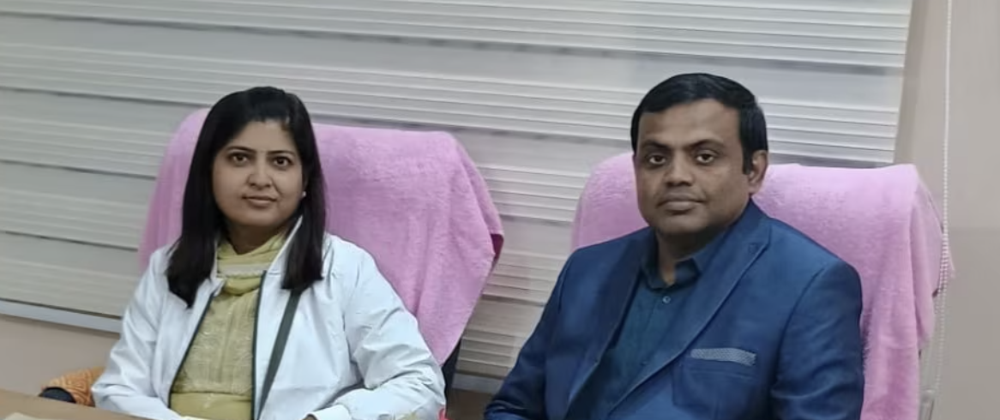

Compassionate, evidence-based treatment in Urology and Paediatrics — under one roof at Kankarbagh, Patna.

"Your health is our highest priority"
The Ayansh Clinic is a premier medical centre in Kankarbagh, Patna, offering specialist care across two critical disciplines — Urology and Paediatrics. Our philosophy is simple: every patient deserves the same standard of care that we would want for our own family.
Founded by Dr. Asit Kumar and Dr. Nikki Kumari, the clinic combines years of institutional training from premier medical institutes with a warm, reassuring environment that puts both adults and children at ease.
Senior faculty-level training from All India Institute of Medical Sciences, Patna.
State-of-the-art diagnostic equipment for accurate, fast results.
From newborns to adults — comprehensive care for every member of your family.
Our doctors bring decades of training from India's finest medical institutions.
MBBS, MS (Urology)
MBBS, MD (Paediatrics)
Comprehensive care across two specialities — all under one roof.
Non-invasive and minimally-invasive options including ESWL, PCNL, and Ureteroscopy for all types of kidney stones.
Diagnosis and management of BPH, prostatitis, and prostate cancer with modern endoscopic techniques.
Expert management of bladder, kidney, and testicular cancers with organ-preserving surgical options where possible.
Comprehensive evaluation and treatment of male factor infertility including varicocele repair and sperm retrieval.
Minimally invasive laparoscopic and endoscopic procedures for faster recovery and minimal scarring.
Diagnosis, treatment, and prevention of recurrent UTIs in men and women with detailed microbiological workup.
Comprehensive care for newborns including assessment, jaundice management, and feeding support.
Regular monitoring of physical, cognitive, and emotional milestones with early intervention for developmental delays.
Complete IAP-recommended immunisation schedules for infants, children, and adolescents.
Management of asthma, bronchiolitis, pneumonia, and recurrent respiratory infections in children.
Diagnosis and treatment of viral, bacterial, and parasitic infections common in childhood.
Counselling for healthy nutrition, management of malnutrition, obesity, and feeding difficulties in children.
Our doctors trained at AIIMS Patna and Medanta — institutions known for surgical excellence and cutting-edge research.
Parents can get their child seen by our paediatrician while they consult our urologist — no second trip needed.
Clear, upfront consultation fees with no hidden charges. We believe good healthcare should be accessible.
Located near Malahi Pakri Metro & Chowk — easily accessible by metro, auto, and private vehicle.
We're here Monday through Saturday. Walk-ins welcome; appointments preferred.
Sector P-017, Vidyapuri Doctors Colony,
Near Malahi Pakri Metro & Chowk,
Kankarbagh, Patna – 800 020
Mon – Sat: 9:00 AM – 1:00 PM
Mon – Sat: 5:00 PM – 8:00 PM
Sunday: Emergency only